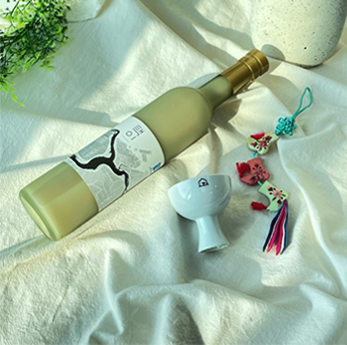
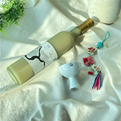
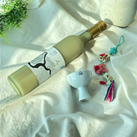

오늘날 재해석된 전통주들을 소개합니다!
start
시대별
현대의 전통주
현대의 전통주
현대의 전통주 입문
현대의 전통주 입문


달달한 술을 즐기신다면,
과하지 않고 달달해서부담없이 즐기기 좋은
붉은 원숭이를 추천드려요.

독한 술을 찾으신다면,
23도와 40도중에 골라서마실 수 있는 토끼소주 중
40도(블랙)를 추천드려요!


숙취 걱정 싫으시다면,
감압증류 방식으로 제조하여숙취 유발 물질이 적은
원소주를 추천드려요!
독특한 술을 원하신다면,
국내에서 유일하게 통밀로빚은 소주인 진맥소주를
추천드려요!
이어온 전통주
현대의 전통주 종류

천비향
총 다섯번의 담금 과정을 거치는 오양주인 천비향은 쌀 본연의 단맛이 묵직하게 느껴지는 술이에요. 진한 풍미지만 부드러워요. 시원하게 드시는 걸 추천드려요!
도원결의
천연 발효기법으로 만든 도원결의는 자연스럽고 은은한 복숭아의 맛과 향이 매력적인 술이에요. 시원하게 보관하여 스트레이트로 드셔보세요!

장수 오미자주
활성탄을 통과시켜 두 번의 여과 과정을 거진 장수 오미자주는 산뜻한 달콤함이 매력이에요. 쓴 맛과 떫은 맛이 지나가며 다양한 풍미가 즐거운 술이랍니다!
원소주
감압증류 기법을 사용한 원소주는 쌀 본연의 향이 퍼지며 알코올 특유의 쓴맛이 덜하고 깔끔한 뒷맛이 매력적인 술입니다. 레몬 등을 곁들여 칵테일로 즐겨 보세요!

토끼소주
뉴욕에서 시작된 술이지만 한국의 전통기술로 만드는 엄연한 증류식 소주인 토끼소주는 입 안에서 풍부한 감촉을 자랑하고 목넘김이 깔끔해요. 온더락으로 마시는 걸 추천해요!

세 번 발효시키는 삼양주 기법으로 만들어진 택이는 달지 않고 적절한 산미가 입맛을 돋우는 술이에요. 은은한 풍미와 깔끔한 뒷맛으로 시원하게 보관하여 얼음 없이 즐겨보세요!
택이
세 번 발효시키는 삼양주 기법으로 만들어진 택이는 달지 않고 적절한 산미가 입맛을 돋우는 술이에요. 은은한 풍미와 깔끔한 뒷맛으로 시원하게 보관하여 얼음 없이 즐겨보세요!
구기홍주
석간수와 청양 햅쌀을 이용한 구기홍주는 달콤함과 씁쓸함이 어우러져 쌉싸름한 끝맛이 특징이에요. 은은한 풍미를 즐기기 위해 스트레이트로 즐기는 걸 추천드려요!

진맥
진맥소주는 독특하게도 밀로 만든 소주입니다! 고소한 빵과 상큼한 풋사과가 떠오르는 향이에요. 특유의 깊고 풍성한 향을 위해 상온 보관 후 마시는 걸 추천드려요
붉은 원숭이
홍국균을 자연 발효시켜 만든 특별한 쌀로 만들어 붉은 빛을 내는 붉은 원숭이는 부드럽고 옅은 단맛이 매력적인 술로 도수에 비해 바디감이 높지 않아 안주 없이도 즐길 수 있어요!

 


창을 클릭하면 닫힙니다.